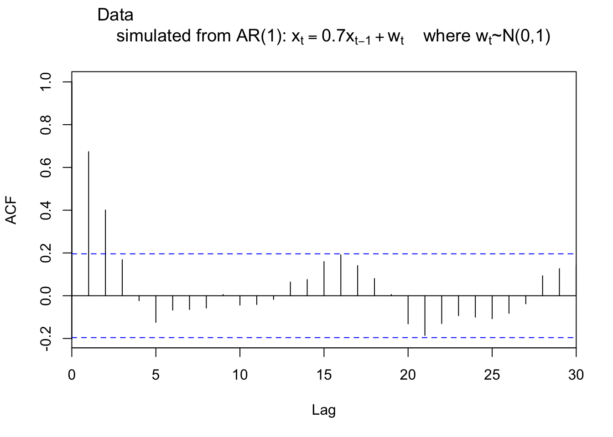
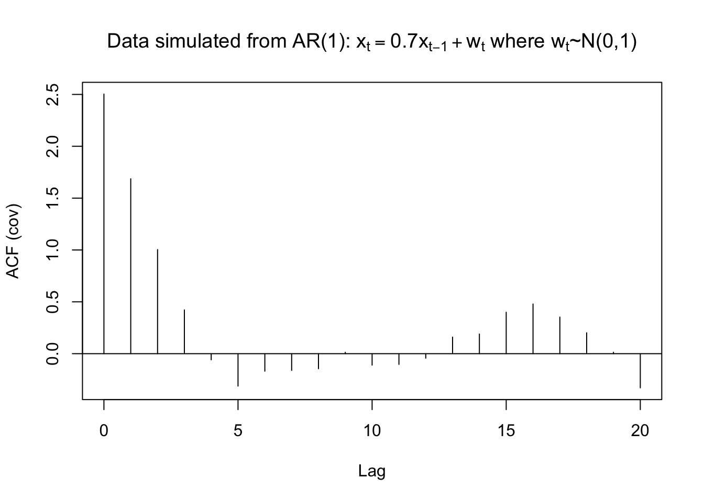
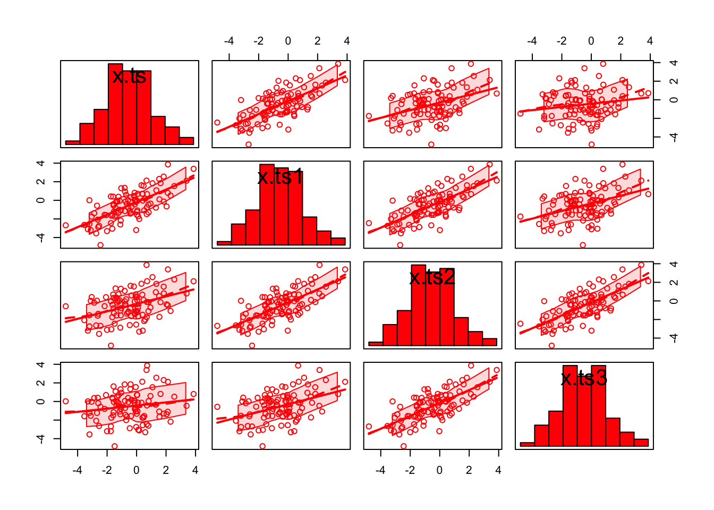
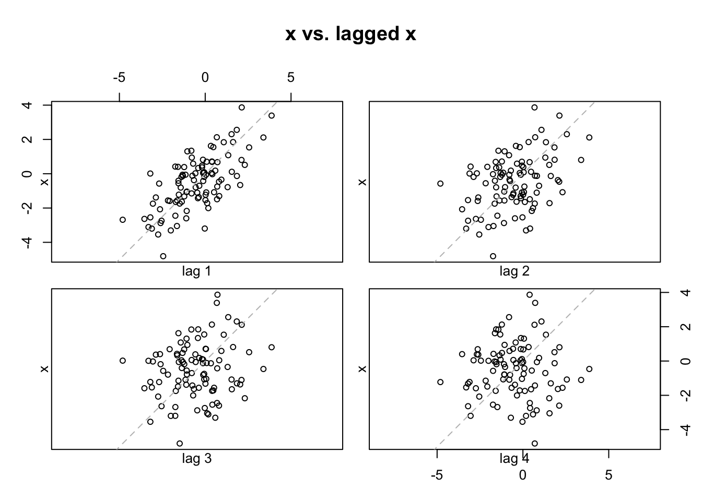
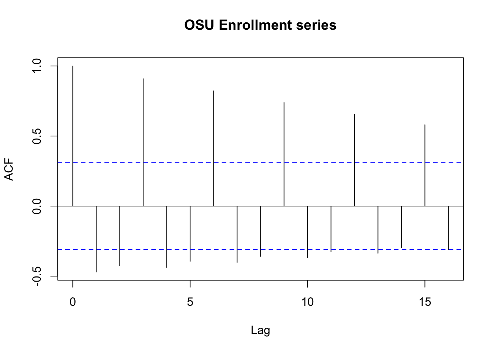

Chapter 7 Estimation and Inference for measures of dependence
\(\mu, \gamma(h),\rho(h)\) are usually unknown so we need to estimate them. To estimate these quantities, we need to assume the time series is weakly stationary.
7.1 Sample mean function
By the weakly stationary assumption, \(E(x_1) = \mu, E(x_2) = \mu,…, E(x_n) = \mu\). Thus, a logical estimate of \(\mu\) is\[\bar{X}=\frac{1}{n}\sum_{t=1}^{n}X_t\] Note that this would not make sense to do if the weakly stationarity assumption did not hold!
7.2 Sample autocovariance function
Again with the weakly stationarity assumption, we only need to worry about the lag difference. The estimated autocovariance function is: \[\hat{\gamma}(h)=\frac{1}{n}\sum_{t=1}^{n-h}(X_{t+h}-\bar{X})(X_t-\bar{X})\]
- \(\hat{\gamma}(h)=\hat{\gamma}(-h)\)
- What is this quantity if h = 0?
- \(\hat{\gamma}(h)=\frac{1}{n}\sum_{t=1}^{n}(X_t-\bar{X})(X_t-\bar{X})\), which is essentially the sample variance.(when n is large n\(\approx\)n-1)
- What is this quantity if h =1?
- \(\hat{\gamma}(h)=\frac{1}{n}\sum_{t=1}^{n-1}(X_{t+1}-\bar{X})(X_t-\bar{X})\)
- This is similar to the formula often used to estimate the covariance between two random variables x and y: \(\hat{Cov}(X,Y)=\frac{1}{n}\sum_{i=1}^{n}(X_i-\bar{X})(Y_i-\bar{Y})\).
- The sum goes up to n - h to avoid having negative subscripts in the x’s.
- This is NOT an unbiased estimate of \(\gamma(h)\)! However, as n gets larger, the bias will go to 0.
7.3 Sample autocorrelation function (ACF)
\[\hat{\rho}(h)=\frac{\hat{\gamma}(h)}{\hat{\gamma}(0)}\]
Question: What does \(\rho(h) = 0\) mean and why would this be important to detect?
That means there’s no linear relationship between \(X_{t-h}\) and \(X_t\) for this particular lag h. This is important b/c this makes it no sense to use \(X_{t-h}\) to predict \(X_t\).
Because this is important, we conduct hypothesis tests for \(\rho(h)\) for all h \(\ne\) 0! To do the hypothesis test, we need to find the sampling distribution for \(\hat{\rho}(h)\) under the null hypothesis of \(\rho(h)\) = 0.
7.4 Sampling distribution
In summary, if \(\rho(h)\) = 0, \(x_t\) is stationary, and the sample size is “large”, then \(\hat{\rho}(h)\) has an approximate normal distribution with mean 0 and standard deviation \(\sigma_{\hat{\rho}(h)}=\frac{1}{\sqrt{n}}\), i.e., \(\hat{\rho}(h)\sim N(0,\frac{1}{\sqrt{n}})\)
A proof is available in Shumway and Stoffer’s textbook and requires an understanding asymptotics (PhD level statistics course). (\(\sqrt{n}(\hat{\rho}(h)-0) \to^{d} N(0,1)\))
\(H_0: \rho(h)=0\)
\(Z=\frac{\hat{\rho}(h)-0}{\frac{1}{\sqrt{n}}}\)
\(Z>|Z_{1-\frac{\alpha}{2}}|\) reject \(H_0\)
\(\hat{\rho}(h)>\pm \frac{Z_{1-\frac{\alpha}{2}}}{\sqrt{n}}\) reject \(H_0\)
For a hypothesis test, we could check if \(\hat{\rho}(h)\) is within the bounds of 0 \(\pm \frac{Z_{1-\frac{\alpha}{2}}}{\sqrt{n}}\) or not where P(Z < \(Z_{1-\frac{\alpha}{2}}\)) = 1 – \(\frac{\alpha}{2}\) for a standard normal random variable Z. If it is not, then there is sufficient evidence to conclude that \(\rho(h) \ne\) 0. We will be using this result a lot for the rest of this course!
Example 7.1 \(x_t=0.7x_{t-1}+w_t, w_t\sim\mathrm{ind.}N(0,1), n=100\)
Click here to download data.
ar1 <- read.table(file = "AR1.0.7.txt", header = TRUE, sep = "")
head(ar1)
#> t x
#> 1 1 0.0417268
#> 2 2 0.3719068
#> 3 3 -0.1854518
#> 4 4 -1.3829742
#> 5 5 -2.8759365
#> 6 6 -2.6001761
x <- ar1$xdev.new(width = 8, height = 6, pointsize = 10)
#Opens up wider plot window than the default (good for time series plots)
plot(x = x, ylab = expression(x[t]), xlab = "t", type = "l", col = "red", lwd = 1 ,
main = expression(paste("Data simulated from AR(1): ", x[t] == 0.7*x[t-1] + w[t], " where ", w[t], "~N(0,1)")) ,
panel.first=grid(col = "gray", lty = "dotted"))
points(x = x, pch = 20, col = "blue")The easiest way to find the autocorrelations in R is to use the acf() function.
rho.x <- acf(x = x, type = "correlation", main =
expression(paste("Data simulated from AR(1): ", x[t] == 0.7*x[t-1] + w[t], " where ", w[t], "~N(0,1)")))
# ci argument can be used to change 1 - alpha for plot
# lag.max argument can be used to change the maximum number of lagsIn our language, the horizontal axis: lag=h, the verical axis: ACF=\(\hat{\rho}(h)\)
The horizontal lines on the plot are drawn at 0 \(\pm \frac{Z_{1-\frac{0.05}{2}}}{\sqrt{n}}\) where \(Z_{1-\frac{0.05}{2}} = 1.96\). i.e., outside the blue dashed line, we reject \(H_0\)
The location of the lines can be changed by using the ci (confidence interval )argument. The default is ci = 0.95. i.e., \(\alpha=0.05\)
rho.x
#>
#> Autocorrelations of series 'x', by lag
#>
#> 0 1 2 3 4 5 6 7
#> 1.000 0.674 0.401 0.169 -0.023 -0.125 -0.067 -0.064
#> 8 9 10 11 12 13 14 15
#> -0.058 0.005 -0.044 -0.041 -0.017 0.064 0.076 0.160
#> 16 17 18 19 20
#> 0.191 0.141 0.081 0.006 -0.132
# the first one is rho_hat(0)
# the second one is rho_hat(1)names(rho.x)
#> [1] "acf" "type" "n.used" "lag" "series" "snames"rho.x$acf
#> , , 1
#>
#> [,1]
#> [1,] 1.000000000
#> [2,] 0.673671871
#> [3,] 0.400891188
#> [4,] 0.168552826
#> [5,] -0.023391129
#> [6,] -0.124632501
#> [7,] -0.067392830
#> [8,] -0.064248086
#> [9,] -0.057717749
#> [10,] 0.005312358
#> [11,] -0.044035976
#> [12,] -0.041121407
#> [13,] -0.017197132
#> [14,] 0.063864970
#> [15,] 0.075575696
#> [16,] 0.159665692
#> [17,] 0.191349965
#> [18,] 0.140967540
#> [19,] 0.080508273
#> [20,] 0.005584061
#> [21,] -0.131559629
# the first one is rho_hat(0)
# the second one is rho_hat(1)rho.x$acf[1:2]
#> [1] 1.0000000 0.6736719Questions:
- What happens to the autocorrelations over time? Why do you think this happens?
- From the model \(x_t=0.7x_{t-1}+w_t\), you can see that the auto correlation dies out as the lag term h increases, the main reason is the coefficient 0.7
- Is there a positive or negative correlation?
- A positive correlation, again from our model \(x_t=0.7x_{t-1}+w_t\), 0.7>0
- At what lags is $(h)$0?
- h=0,1,2. But we don’t care h=0, it’s 1 just by definition.
R plots \(\hat{\rho}(0)=1\) by default. This is unnecessary because \(\hat{\rho}(0)\) will be 1 for all time series data sets (again, it’s just by definition)! To remove \(\hat{\rho}(0)\) from the plot, one can specify the x-axis limit to start at 1. Below is one way this can be done and also illustrates how to use the lag.max argument.
par(xaxs = "i")
# Remove default 4% extra space around min and max of x-axis
rho.x2 <- acf(x = x, type = "correlation", xlim =
c(0,30), lag.max = 30, main = expression(paste("Data
simulated from AR(1): ", x[t] == 0.7*x[t-1] + w[t], "
where ", w[t], "~N(0,1)")))
par(xaxs = "r") # Return to the default: regular patternNote that \(\hat{\rho}(0)=1\) is still present but the y-axis at x = 0 hides it.
While displaying \(\hat{\rho}(0)=1\) may seem minor, we will examine these autocorrelations later in the course to determine an appropriate model for a data set. Often, one will forget to ignore the line drawn at lag = 0 and choose an incorrect model.
You should always ignore the line drawn at lag=0!!! b/c it’s 1 just by definition.
The autocovariances can also be found using acf().
acf(x = x, type = "covariance", main =
expression(paste("Data simulated from AR(1): ", x[t]
== 0.7*x[t-1] + w[t], " where ", w[t], "~N(0,1)")))
To help understand autocorrelations and their relationship with the correlation coefficient better, I decided to look at the “usual” estimated Pearson correlation coefficients between \(x_t, x_{t-1}, x_{t-2},\) and \(x_{t-3}\).
# Examine usual ways to check correlation
x.ts <- ts(x)
x.ts
#> Time Series:
#> Start = 1
#> End = 100
#> Frequency = 1
#> [1] 0.04172680 0.37190682 -0.18545185 -1.38297422
#> [5] -2.87593652 -2.60017605 -1.10401719 -0.46385116
#> [9] 0.80339069 2.11483585 3.39124978 3.86739194
#> [13] 2.12733595 0.67590604 0.71429367 0.38928044
#> [17] -1.22681923 0.02287443 -0.57321924 -2.68376851
#> [21] -4.80850095 -2.44797633 -1.73921817 -1.48773023
#> [25] 0.68920966 0.40220308 -1.58781041 -2.07300848
#> [29] -2.63408197 -3.54333559 -2.74116328 -2.54401750
#> [33] -3.19570817 -0.02623669 0.41663974 -1.74485791
#> [37] -3.04847994 -1.64692948 -1.71478199 0.11340965
#> [41] 1.55017869 0.47317192 -0.18521791 -0.05759091
#> [45] -1.32105323 -1.22071881 -1.53827085 0.01277076
#> [49] -3.19955388 -3.11022833 -3.30621969 -2.00546537
#> [53] 0.18084415 0.58776479 -0.70238414 -0.34570939
#> [57] 0.94209248 -0.78176791 1.30547320 -1.04054783
#> [61] -1.06897160 -1.08850000 0.06031172 -0.05724856
#> [65] -1.14731083 -0.79262221 -0.55565451 -1.55985750
#> [69] -2.17062644 -1.07776017 0.51569067 2.30660050
#> [73] 1.53530426 2.55899301 1.83836277 1.08072014
#> [77] 1.34125182 -0.80729300 -1.42735924 -0.42456207
#> [81] -0.11625003 -0.74807460 0.70052717 0.08557377
#> [85] -0.06039041 0.04479407 -0.12657328 -1.30097021
#> [89] 0.81586192 -0.13139757 1.84725644 1.62364752
#> [93] 0.33080663 -0.40824385 -1.56008530 -1.63175408
#> [97] -1.36418639 -0.37209392 -0.65833401 2.03705932set1 <- ts.intersect(x.ts, x.ts1 = lag(x = x.ts, k = -1), x.ts2 = lag(x = x.ts, k = -2), x.ts3 = lag(x = x.ts, k = -3))
# b/c we use ts.intersect (take intersection), we have the following
# x.ts starts at X4
# x.ts1 starts at X3
# x.ts2 starts at X2
# x.ts3 starts at X1
set1
#> Time Series:
#> Start = 4
#> End = 100
#> Frequency = 1
#> x.ts x.ts1 x.ts2 x.ts3
#> 4 -1.38297422 -0.18545185 0.37190682 0.04172680
#> 5 -2.87593652 -1.38297422 -0.18545185 0.37190682
#> 6 -2.60017605 -2.87593652 -1.38297422 -0.18545185
#> 7 -1.10401719 -2.60017605 -2.87593652 -1.38297422
#> 8 -0.46385116 -1.10401719 -2.60017605 -2.87593652
#> 9 0.80339069 -0.46385116 -1.10401719 -2.60017605
#> 10 2.11483585 0.80339069 -0.46385116 -1.10401719
#> 11 3.39124978 2.11483585 0.80339069 -0.46385116
#> 12 3.86739194 3.39124978 2.11483585 0.80339069
#> 13 2.12733595 3.86739194 3.39124978 2.11483585
#> 14 0.67590604 2.12733595 3.86739194 3.39124978
#> 15 0.71429367 0.67590604 2.12733595 3.86739194
#> 16 0.38928044 0.71429367 0.67590604 2.12733595
#> 17 -1.22681923 0.38928044 0.71429367 0.67590604
#> 18 0.02287443 -1.22681923 0.38928044 0.71429367
#> 19 -0.57321924 0.02287443 -1.22681923 0.38928044
#> 20 -2.68376851 -0.57321924 0.02287443 -1.22681923
#> 21 -4.80850095 -2.68376851 -0.57321924 0.02287443
#> 22 -2.44797633 -4.80850095 -2.68376851 -0.57321924
#> 23 -1.73921817 -2.44797633 -4.80850095 -2.68376851
#> 24 -1.48773023 -1.73921817 -2.44797633 -4.80850095
#> 25 0.68920966 -1.48773023 -1.73921817 -2.44797633
#> 26 0.40220308 0.68920966 -1.48773023 -1.73921817
#> 27 -1.58781041 0.40220308 0.68920966 -1.48773023
#> 28 -2.07300848 -1.58781041 0.40220308 0.68920966
#> 29 -2.63408197 -2.07300848 -1.58781041 0.40220308
#> 30 -3.54333559 -2.63408197 -2.07300848 -1.58781041
#> 31 -2.74116328 -3.54333559 -2.63408197 -2.07300848
#> 32 -2.54401750 -2.74116328 -3.54333559 -2.63408197
#> 33 -3.19570817 -2.54401750 -2.74116328 -3.54333559
#> 34 -0.02623669 -3.19570817 -2.54401750 -2.74116328
#> 35 0.41663974 -0.02623669 -3.19570817 -2.54401750
#> 36 -1.74485791 0.41663974 -0.02623669 -3.19570817
#> 37 -3.04847994 -1.74485791 0.41663974 -0.02623669
#> 38 -1.64692948 -3.04847994 -1.74485791 0.41663974
#> 39 -1.71478199 -1.64692948 -3.04847994 -1.74485791
#> 40 0.11340965 -1.71478199 -1.64692948 -3.04847994
#> 41 1.55017869 0.11340965 -1.71478199 -1.64692948
#> 42 0.47317192 1.55017869 0.11340965 -1.71478199
#> 43 -0.18521791 0.47317192 1.55017869 0.11340965
#> 44 -0.05759091 -0.18521791 0.47317192 1.55017869
#> 45 -1.32105323 -0.05759091 -0.18521791 0.47317192
#> 46 -1.22071881 -1.32105323 -0.05759091 -0.18521791
#> 47 -1.53827085 -1.22071881 -1.32105323 -0.05759091
#> 48 0.01277076 -1.53827085 -1.22071881 -1.32105323
#> 49 -3.19955388 0.01277076 -1.53827085 -1.22071881
#> 50 -3.11022833 -3.19955388 0.01277076 -1.53827085
#> 51 -3.30621969 -3.11022833 -3.19955388 0.01277076
#> 52 -2.00546537 -3.30621969 -3.11022833 -3.19955388
#> 53 0.18084415 -2.00546537 -3.30621969 -3.11022833
#> 54 0.58776479 0.18084415 -2.00546537 -3.30621969
#> 55 -0.70238414 0.58776479 0.18084415 -2.00546537
#> 56 -0.34570939 -0.70238414 0.58776479 0.18084415
#> 57 0.94209248 -0.34570939 -0.70238414 0.58776479
#> 58 -0.78176791 0.94209248 -0.34570939 -0.70238414
#> 59 1.30547320 -0.78176791 0.94209248 -0.34570939
#> 60 -1.04054783 1.30547320 -0.78176791 0.94209248
#> 61 -1.06897160 -1.04054783 1.30547320 -0.78176791
#> 62 -1.08850000 -1.06897160 -1.04054783 1.30547320
#> 63 0.06031172 -1.08850000 -1.06897160 -1.04054783
#> 64 -0.05724856 0.06031172 -1.08850000 -1.06897160
#> 65 -1.14731083 -0.05724856 0.06031172 -1.08850000
#> 66 -0.79262221 -1.14731083 -0.05724856 0.06031172
#> 67 -0.55565451 -0.79262221 -1.14731083 -0.05724856
#> 68 -1.55985750 -0.55565451 -0.79262221 -1.14731083
#> 69 -2.17062644 -1.55985750 -0.55565451 -0.79262221
#> 70 -1.07776017 -2.17062644 -1.55985750 -0.55565451
#> 71 0.51569067 -1.07776017 -2.17062644 -1.55985750
#> 72 2.30660050 0.51569067 -1.07776017 -2.17062644
#> 73 1.53530426 2.30660050 0.51569067 -1.07776017
#> 74 2.55899301 1.53530426 2.30660050 0.51569067
#> 75 1.83836277 2.55899301 1.53530426 2.30660050
#> 76 1.08072014 1.83836277 2.55899301 1.53530426
#> 77 1.34125182 1.08072014 1.83836277 2.55899301
#> 78 -0.80729300 1.34125182 1.08072014 1.83836277
#> 79 -1.42735924 -0.80729300 1.34125182 1.08072014
#> 80 -0.42456207 -1.42735924 -0.80729300 1.34125182
#> 81 -0.11625003 -0.42456207 -1.42735924 -0.80729300
#> 82 -0.74807460 -0.11625003 -0.42456207 -1.42735924
#> 83 0.70052717 -0.74807460 -0.11625003 -0.42456207
#> 84 0.08557377 0.70052717 -0.74807460 -0.11625003
#> 85 -0.06039041 0.08557377 0.70052717 -0.74807460
#> 86 0.04479407 -0.06039041 0.08557377 0.70052717
#> 87 -0.12657328 0.04479407 -0.06039041 0.08557377
#> 88 -1.30097021 -0.12657328 0.04479407 -0.06039041
#> 89 0.81586192 -1.30097021 -0.12657328 0.04479407
#> 90 -0.13139757 0.81586192 -1.30097021 -0.12657328
#> 91 1.84725644 -0.13139757 0.81586192 -1.30097021
#> 92 1.62364752 1.84725644 -0.13139757 0.81586192
#> 93 0.33080663 1.62364752 1.84725644 -0.13139757
#> 94 -0.40824385 0.33080663 1.62364752 1.84725644
#> 95 -1.56008530 -0.40824385 0.33080663 1.62364752
#> 96 -1.63175408 -1.56008530 -0.40824385 0.33080663
#> 97 -1.36418639 -1.63175408 -1.56008530 -0.40824385
#> 98 -0.37209392 -1.36418639 -1.63175408 -1.56008530
#> 99 -0.65833401 -0.37209392 -1.36418639 -1.63175408
#> 100 2.03705932 -0.65833401 -0.37209392 -1.36418639cor(set1)
#> x.ts x.ts1 x.ts2 x.ts3
#> x.ts 1.0000000 0.6824913 0.4065326 0.1710145
#> x.ts1 0.6824913 1.0000000 0.6929638 0.4108375
#> x.ts2 0.4065326 0.6929638 1.0000000 0.6935801
#> x.ts3 0.1710145 0.4108375 0.6935801 1.0000000
# corr matrixlibrary(car) #scatterplot.matrix is in this package
#> Loading required package: carData
scatterplotMatrix(formula = ~x.ts + x.ts1 + x.ts2 + x.ts3, data = set1,
diagonal = list(method = "histogram"), col = "red")
set2 <- ts.intersect(x.ts, x.ts1 = lag(x = x.ts, k = 1), x.ts2 = lag(x = x.ts, k = 2), x.ts3 = lag(x = x.ts, k = 3))
set2
#> Time Series:
#> Start = 1
#> End = 97
#> Frequency = 1
#> x.ts x.ts1 x.ts2 x.ts3
#> 1 0.04172680 0.37190682 -0.18545185 -1.38297422
#> 2 0.37190682 -0.18545185 -1.38297422 -2.87593652
#> 3 -0.18545185 -1.38297422 -2.87593652 -2.60017605
#> 4 -1.38297422 -2.87593652 -2.60017605 -1.10401719
#> 5 -2.87593652 -2.60017605 -1.10401719 -0.46385116
#> 6 -2.60017605 -1.10401719 -0.46385116 0.80339069
#> 7 -1.10401719 -0.46385116 0.80339069 2.11483585
#> 8 -0.46385116 0.80339069 2.11483585 3.39124978
#> 9 0.80339069 2.11483585 3.39124978 3.86739194
#> 10 2.11483585 3.39124978 3.86739194 2.12733595
#> 11 3.39124978 3.86739194 2.12733595 0.67590604
#> 12 3.86739194 2.12733595 0.67590604 0.71429367
#> 13 2.12733595 0.67590604 0.71429367 0.38928044
#> 14 0.67590604 0.71429367 0.38928044 -1.22681923
#> 15 0.71429367 0.38928044 -1.22681923 0.02287443
#> 16 0.38928044 -1.22681923 0.02287443 -0.57321924
#> 17 -1.22681923 0.02287443 -0.57321924 -2.68376851
#> 18 0.02287443 -0.57321924 -2.68376851 -4.80850095
#> 19 -0.57321924 -2.68376851 -4.80850095 -2.44797633
#> 20 -2.68376851 -4.80850095 -2.44797633 -1.73921817
#> 21 -4.80850095 -2.44797633 -1.73921817 -1.48773023
#> 22 -2.44797633 -1.73921817 -1.48773023 0.68920966
#> 23 -1.73921817 -1.48773023 0.68920966 0.40220308
#> 24 -1.48773023 0.68920966 0.40220308 -1.58781041
#> 25 0.68920966 0.40220308 -1.58781041 -2.07300848
#> 26 0.40220308 -1.58781041 -2.07300848 -2.63408197
#> 27 -1.58781041 -2.07300848 -2.63408197 -3.54333559
#> 28 -2.07300848 -2.63408197 -3.54333559 -2.74116328
#> 29 -2.63408197 -3.54333559 -2.74116328 -2.54401750
#> 30 -3.54333559 -2.74116328 -2.54401750 -3.19570817
#> 31 -2.74116328 -2.54401750 -3.19570817 -0.02623669
#> 32 -2.54401750 -3.19570817 -0.02623669 0.41663974
#> 33 -3.19570817 -0.02623669 0.41663974 -1.74485791
#> 34 -0.02623669 0.41663974 -1.74485791 -3.04847994
#> 35 0.41663974 -1.74485791 -3.04847994 -1.64692948
#> 36 -1.74485791 -3.04847994 -1.64692948 -1.71478199
#> 37 -3.04847994 -1.64692948 -1.71478199 0.11340965
#> 38 -1.64692948 -1.71478199 0.11340965 1.55017869
#> 39 -1.71478199 0.11340965 1.55017869 0.47317192
#> 40 0.11340965 1.55017869 0.47317192 -0.18521791
#> 41 1.55017869 0.47317192 -0.18521791 -0.05759091
#> 42 0.47317192 -0.18521791 -0.05759091 -1.32105323
#> 43 -0.18521791 -0.05759091 -1.32105323 -1.22071881
#> 44 -0.05759091 -1.32105323 -1.22071881 -1.53827085
#> 45 -1.32105323 -1.22071881 -1.53827085 0.01277076
#> 46 -1.22071881 -1.53827085 0.01277076 -3.19955388
#> 47 -1.53827085 0.01277076 -3.19955388 -3.11022833
#> 48 0.01277076 -3.19955388 -3.11022833 -3.30621969
#> 49 -3.19955388 -3.11022833 -3.30621969 -2.00546537
#> 50 -3.11022833 -3.30621969 -2.00546537 0.18084415
#> 51 -3.30621969 -2.00546537 0.18084415 0.58776479
#> 52 -2.00546537 0.18084415 0.58776479 -0.70238414
#> 53 0.18084415 0.58776479 -0.70238414 -0.34570939
#> 54 0.58776479 -0.70238414 -0.34570939 0.94209248
#> 55 -0.70238414 -0.34570939 0.94209248 -0.78176791
#> 56 -0.34570939 0.94209248 -0.78176791 1.30547320
#> 57 0.94209248 -0.78176791 1.30547320 -1.04054783
#> 58 -0.78176791 1.30547320 -1.04054783 -1.06897160
#> 59 1.30547320 -1.04054783 -1.06897160 -1.08850000
#> 60 -1.04054783 -1.06897160 -1.08850000 0.06031172
#> 61 -1.06897160 -1.08850000 0.06031172 -0.05724856
#> 62 -1.08850000 0.06031172 -0.05724856 -1.14731083
#> 63 0.06031172 -0.05724856 -1.14731083 -0.79262221
#> 64 -0.05724856 -1.14731083 -0.79262221 -0.55565451
#> 65 -1.14731083 -0.79262221 -0.55565451 -1.55985750
#> 66 -0.79262221 -0.55565451 -1.55985750 -2.17062644
#> 67 -0.55565451 -1.55985750 -2.17062644 -1.07776017
#> 68 -1.55985750 -2.17062644 -1.07776017 0.51569067
#> 69 -2.17062644 -1.07776017 0.51569067 2.30660050
#> 70 -1.07776017 0.51569067 2.30660050 1.53530426
#> 71 0.51569067 2.30660050 1.53530426 2.55899301
#> 72 2.30660050 1.53530426 2.55899301 1.83836277
#> 73 1.53530426 2.55899301 1.83836277 1.08072014
#> 74 2.55899301 1.83836277 1.08072014 1.34125182
#> 75 1.83836277 1.08072014 1.34125182 -0.80729300
#> 76 1.08072014 1.34125182 -0.80729300 -1.42735924
#> 77 1.34125182 -0.80729300 -1.42735924 -0.42456207
#> 78 -0.80729300 -1.42735924 -0.42456207 -0.11625003
#> 79 -1.42735924 -0.42456207 -0.11625003 -0.74807460
#> 80 -0.42456207 -0.11625003 -0.74807460 0.70052717
#> 81 -0.11625003 -0.74807460 0.70052717 0.08557377
#> 82 -0.74807460 0.70052717 0.08557377 -0.06039041
#> 83 0.70052717 0.08557377 -0.06039041 0.04479407
#> 84 0.08557377 -0.06039041 0.04479407 -0.12657328
#> 85 -0.06039041 0.04479407 -0.12657328 -1.30097021
#> 86 0.04479407 -0.12657328 -1.30097021 0.81586192
#> 87 -0.12657328 -1.30097021 0.81586192 -0.13139757
#> 88 -1.30097021 0.81586192 -0.13139757 1.84725644
#> 89 0.81586192 -0.13139757 1.84725644 1.62364752
#> 90 -0.13139757 1.84725644 1.62364752 0.33080663
#> 91 1.84725644 1.62364752 0.33080663 -0.40824385
#> 92 1.62364752 0.33080663 -0.40824385 -1.56008530
#> 93 0.33080663 -0.40824385 -1.56008530 -1.63175408
#> 94 -0.40824385 -1.56008530 -1.63175408 -1.36418639
#> 95 -1.56008530 -1.63175408 -1.36418639 -0.37209392
#> 96 -1.63175408 -1.36418639 -0.37209392 -0.65833401
#> 97 -1.36418639 -0.37209392 -0.65833401 2.03705932cor(set2)
#> x.ts x.ts1 x.ts2 x.ts3
#> x.ts 1.0000000 0.6935801 0.4108375 0.1710145
#> x.ts1 0.6935801 1.0000000 0.6929638 0.4065326
#> x.ts2 0.4108375 0.6929638 1.0000000 0.6824913
#> x.ts3 0.1710145 0.4065326 0.6824913 1.0000000#Another way to see dependence
lag.plot(x = x, lags = 4, layout = c(2,2), main = "x vs. lagged x",
do.lines = FALSE)
- The
ts()function converts the time series data to an object that R recognizes as a time series.
- The
lag()function is used to find xt-1, xt-2, and xt-3. The k argument specifies how many time periods to go back. Runlag(x.ts, k = -1)andlag(x.ts, k = 1)to see what happens. To get everything lined up as I wanted withts.intersect(), I chose to use k = -1.
lag(x.ts, k = -1) #shift down one time period(forward)
#> Time Series:
#> Start = 2
#> End = 101
#> Frequency = 1
#> [1] 0.04172680 0.37190682 -0.18545185 -1.38297422
#> [5] -2.87593652 -2.60017605 -1.10401719 -0.46385116
#> [9] 0.80339069 2.11483585 3.39124978 3.86739194
#> [13] 2.12733595 0.67590604 0.71429367 0.38928044
#> [17] -1.22681923 0.02287443 -0.57321924 -2.68376851
#> [21] -4.80850095 -2.44797633 -1.73921817 -1.48773023
#> [25] 0.68920966 0.40220308 -1.58781041 -2.07300848
#> [29] -2.63408197 -3.54333559 -2.74116328 -2.54401750
#> [33] -3.19570817 -0.02623669 0.41663974 -1.74485791
#> [37] -3.04847994 -1.64692948 -1.71478199 0.11340965
#> [41] 1.55017869 0.47317192 -0.18521791 -0.05759091
#> [45] -1.32105323 -1.22071881 -1.53827085 0.01277076
#> [49] -3.19955388 -3.11022833 -3.30621969 -2.00546537
#> [53] 0.18084415 0.58776479 -0.70238414 -0.34570939
#> [57] 0.94209248 -0.78176791 1.30547320 -1.04054783
#> [61] -1.06897160 -1.08850000 0.06031172 -0.05724856
#> [65] -1.14731083 -0.79262221 -0.55565451 -1.55985750
#> [69] -2.17062644 -1.07776017 0.51569067 2.30660050
#> [73] 1.53530426 2.55899301 1.83836277 1.08072014
#> [77] 1.34125182 -0.80729300 -1.42735924 -0.42456207
#> [81] -0.11625003 -0.74807460 0.70052717 0.08557377
#> [85] -0.06039041 0.04479407 -0.12657328 -1.30097021
#> [89] 0.81586192 -0.13139757 1.84725644 1.62364752
#> [93] 0.33080663 -0.40824385 -1.56008530 -1.63175408
#> [97] -1.36418639 -0.37209392 -0.65833401 2.03705932lag(x.ts, k = 0)
#> Time Series:
#> Start = 1
#> End = 100
#> Frequency = 1
#> [1] 0.04172680 0.37190682 -0.18545185 -1.38297422
#> [5] -2.87593652 -2.60017605 -1.10401719 -0.46385116
#> [9] 0.80339069 2.11483585 3.39124978 3.86739194
#> [13] 2.12733595 0.67590604 0.71429367 0.38928044
#> [17] -1.22681923 0.02287443 -0.57321924 -2.68376851
#> [21] -4.80850095 -2.44797633 -1.73921817 -1.48773023
#> [25] 0.68920966 0.40220308 -1.58781041 -2.07300848
#> [29] -2.63408197 -3.54333559 -2.74116328 -2.54401750
#> [33] -3.19570817 -0.02623669 0.41663974 -1.74485791
#> [37] -3.04847994 -1.64692948 -1.71478199 0.11340965
#> [41] 1.55017869 0.47317192 -0.18521791 -0.05759091
#> [45] -1.32105323 -1.22071881 -1.53827085 0.01277076
#> [49] -3.19955388 -3.11022833 -3.30621969 -2.00546537
#> [53] 0.18084415 0.58776479 -0.70238414 -0.34570939
#> [57] 0.94209248 -0.78176791 1.30547320 -1.04054783
#> [61] -1.06897160 -1.08850000 0.06031172 -0.05724856
#> [65] -1.14731083 -0.79262221 -0.55565451 -1.55985750
#> [69] -2.17062644 -1.07776017 0.51569067 2.30660050
#> [73] 1.53530426 2.55899301 1.83836277 1.08072014
#> [77] 1.34125182 -0.80729300 -1.42735924 -0.42456207
#> [81] -0.11625003 -0.74807460 0.70052717 0.08557377
#> [85] -0.06039041 0.04479407 -0.12657328 -1.30097021
#> [89] 0.81586192 -0.13139757 1.84725644 1.62364752
#> [93] 0.33080663 -0.40824385 -1.56008530 -1.63175408
#> [97] -1.36418639 -0.37209392 -0.65833401 2.03705932lag(x.ts, k = 1)
#> Time Series:
#> Start = 0
#> End = 99
#> Frequency = 1
#> [1] 0.04172680 0.37190682 -0.18545185 -1.38297422
#> [5] -2.87593652 -2.60017605 -1.10401719 -0.46385116
#> [9] 0.80339069 2.11483585 3.39124978 3.86739194
#> [13] 2.12733595 0.67590604 0.71429367 0.38928044
#> [17] -1.22681923 0.02287443 -0.57321924 -2.68376851
#> [21] -4.80850095 -2.44797633 -1.73921817 -1.48773023
#> [25] 0.68920966 0.40220308 -1.58781041 -2.07300848
#> [29] -2.63408197 -3.54333559 -2.74116328 -2.54401750
#> [33] -3.19570817 -0.02623669 0.41663974 -1.74485791
#> [37] -3.04847994 -1.64692948 -1.71478199 0.11340965
#> [41] 1.55017869 0.47317192 -0.18521791 -0.05759091
#> [45] -1.32105323 -1.22071881 -1.53827085 0.01277076
#> [49] -3.19955388 -3.11022833 -3.30621969 -2.00546537
#> [53] 0.18084415 0.58776479 -0.70238414 -0.34570939
#> [57] 0.94209248 -0.78176791 1.30547320 -1.04054783
#> [61] -1.06897160 -1.08850000 0.06031172 -0.05724856
#> [65] -1.14731083 -0.79262221 -0.55565451 -1.55985750
#> [69] -2.17062644 -1.07776017 0.51569067 2.30660050
#> [73] 1.53530426 2.55899301 1.83836277 1.08072014
#> [77] 1.34125182 -0.80729300 -1.42735924 -0.42456207
#> [81] -0.11625003 -0.74807460 0.70052717 0.08557377
#> [85] -0.06039041 0.04479407 -0.12657328 -1.30097021
#> [89] 0.81586192 -0.13139757 1.84725644 1.62364752
#> [93] 0.33080663 -0.40824385 -1.56008530 -1.63175408
#> [97] -1.36418639 -0.37209392 -0.65833401 2.03705932# 創建一個時間序列 x.ts
b.ts <- ts(c(10, 20, 30, 40, 50, 60), start = c(2022, 1), frequency = 12)
# 使用 ts.intersect() 函數合併 x.ts 和它的三個 lag 時間序列
ts.intersect(b.ts, b.ts1 = lag(x = b.ts, k = -1), b.ts2 = lag(x = b.ts, k = -2), b.ts3 = lag(x = b.ts, k = -3))
#> b.ts b.ts1 b.ts2 b.ts3
#> Apr 2022 40 30 20 10
#> May 2022 50 40 30 20
#> Jun 2022 60 50 40 30#b.ts1、b.ts2 和 b.ts3 的時間點是 b.ts 的時間點往後推 1、2、3 個時間單位。
b.ts1 = lag(x = b.ts, k = -1)
b.ts2 = lag(x = b.ts, k = -2)
b.ts3 = lag(x = b.ts, k = -3)
b.ts
#> Jan Feb Mar Apr May Jun
#> 2022 10 20 30 40 50 60
b.ts1
#> Feb Mar Apr May Jun Jul
#> 2022 10 20 30 40 50 60
b.ts2
#> Mar Apr May Jun Jul Aug
#> 2022 10 20 30 40 50 60
b.ts3
#> Apr May Jun Jul Aug Sep
#> 2022 10 20 30 40 50 60- The
ts.intersect()function finds the intersection of the four different “variables”.
- The
cor()function finds the estimated Pearson correlation coefficients between all variable pairs. Notice how close these correlations are to the autocorrelations!
- The
scatterplotMatrix()function finds a scatter plot matrix. The function is in the car package.
#Used for estimation later in course
gamma.x <- acf(x = x, type = "covariance", main =
expression(paste("Data simulated from AR(1): ", x[t] == 0.7*x[t-1] + w[t], " where ", w[t], "~N(0,1)")))
gamma.x
#>
#> Autocovariances of series 'x', by lag
#>
#> 0 1 2 3 4 5 6
#> 2.5033 1.6864 1.0036 0.4219 -0.0586 -0.3120 -0.1687
#> 7 8 9 10 11 12 13
#> -0.1608 -0.1445 0.0133 -0.1102 -0.1029 -0.0430 0.1599
#> 14 15 16 17 18 19 20
#> 0.1892 0.3997 0.4790 0.3529 0.2015 0.0140 -0.3293
mean(x)
#> [1] -0.4963419Example 7.2 OSU enrollment data
Click here to download data.
osu.enroll <- read.csv(file = "OSU_enroll.csv", stringsAsFactors = TRUE)
head(osu.enroll)
#> t Semester Year Enrollment date
#> 1 1 Fall 1989 20110 8/31/1989
#> 2 2 Spring 1990 19128 2/1/1990
#> 3 3 Summer 1990 7553 6/1/1990
#> 4 4 Fall 1990 19591 8/31/1990
#> 5 5 Spring 1991 18361 2/1/1991
#> 6 6 Summer 1991 6702 6/1/1991
tail(osu.enroll)
#> t Semester Year Enrollment date
#> 35 35 Spring 2001 20004 2/1/2001
#> 36 36 Summer 2001 7558 6/1/2001
#> 37 37 Fall 2001 21872 8/31/2001
#> 38 38 Spring 2002 20922 2/1/2002
#> 39 39 Summer 2002 7868 6/1/2002
#> 40 40 Fall 2002 22992 8/31/2002
x <- osu.enroll$Enrollment rho.x <- acf(x = x, type = "correlation", main = "OSU Enrollment series")
rho.x
#>
#> Autocorrelations of series 'x', by lag
#>
#> 0 1 2 3 4 5 6 7
#> 1.000 -0.470 -0.425 0.909 -0.438 -0.395 0.822 -0.403
#> 8 9 10 11 12 13 14 15
#> -0.358 0.739 -0.367 -0.327 0.655 -0.337 -0.297 0.581
#> 16
#> -0.309
rho.x$acf[1:9]
#> [1] 1.0000000 -0.4702315 -0.4253427 0.9087421 -0.4377336
#> [6] -0.3946048 0.8224660 -0.4025871 -0.3584216Notes:
- There are some large autocorrelations. This is a characteristic of a nonstationary series (seasonal factor). We will examine this more later.
- Because the series is not stationary, the hypothesis test for \(\rho(h)\) = 0 should not be done here using the methods discussed earlier.
- There is a pattern among the autocorrelations. What does this correspond to? (seasonal factor) (similar value/behavior happens during specific period of time/months across different years)